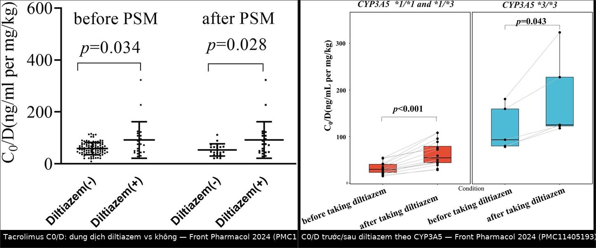
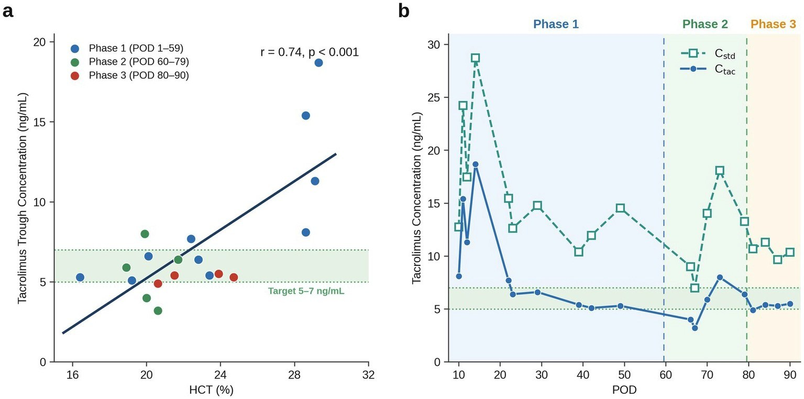

117 — Tương tác thuốc & theo dõi nồng độ tacrolimus ở người ghép tạng / Tacrolimus drug–drug interactions and therapeutic drug monitoring
Tags: pattern:tuong-tac-thuoc pattern:ngo-doc-thuoc vung:gan vung:than-ghep score:C0-trough score:C0-D score:CYP3A5 protocol:TDM-tacrolimus protocol:CYP3A5-genotype protocol:LC-MSMS
Mức chắc chắn (certainty): tổng hợp y văn (literature synthesis) — bảng phân loại ức chế/cảm ứng CYP3A4 lấy từ tổng quan tương tác kháng sinh (Rev Esp Quimioter 2024, PMC11231487); các con số độ lớn tương tác lấy từ 4 nghiên cứu nguyên văn (Front Pharmacol 2024 PMC11405193; Ther Adv Drug Saf 2026 PMC12901897; CPT Pharmacometrics Syst Pharmacol 2026 PMC13539210; Pharmacol Res Perspect 2023 PMC10395274) + 3 ca/đoàn hệ về theo dõi nồng độ (Front Med 2026 PMC13448784; Pharmacotherapy 2026 PMC12884575; Clin Pharmacol Drug Dev 2026 PMC12813645) + 1 ca ngộ độc (Cureus 2025 PMC12009141). Không gắn một thử nghiệm ngẫu nhiên nào về cách chỉnh liều; mọi ngưỡng "giảm bao nhiêu %" là tổng hợp thực hành và được ghi rõ mức suy luận.
Câu chốt: tacrolimus là thuốc chỉ số điều trị hẹp (narrow therapeutic index) chuyển hóa qua CYP3A4/3A5 ở ruột và gan + bị P-glycoprotein (P-gp) đẩy ngược ra lòng ruột, lại gắn hồng cầu > 95% — nên một con số "C0 = 6,2 ng/mL" chỉ có nghĩa khi biết 4 thứ: (1) thuốc nào vừa được thêm/bớt (ức chế hay cảm ứng), (2) hematocrit lúc lấy máu, (3) lấy đúng 12 giờ ± 30 phút sau liều và đã đạt trạng thái ổn định (≥ 3 ngày, ~5 chu kỳ bán thải), (4) kiểu gen CYP3A5 của người nhận (và của gan cho nếu ghép gan). Sai lầm hay gặp không phải "không đo nồng độ" mà là đo rồi chỉnh liều theo con số mà không đọc bối cảnh — tăng liều oan khi thiếu máu (C0 giả thấp) hoặc bỏ sót ngộ độc thật khi thêm clarithromycin/voriconazole/ritonavir.
1. Tổng quan bệnh học – cơ chế hình ảnh
Ở đây "hình ảnh" là đường cong nồng độ–thời gian và biểu đồ C0/D, không phải CT/MRI. Vì vậy phần (1) giải thích TẠI SAO nồng độ đo được lại lệch bằng dược động học, đúng tinh thần "vật lý + mô bệnh" của repo: mỗi con số trên giấy là kết quả của 4 tầng dưới đây.
1.1 Bốn tầng quyết định con số C0
| Tầng | Cơ chế | Hệ quả trên xét nghiệm |
|---|---|---|
| Hồng cầu | Tacrolimus gắn hồng cầu > 95%, phần tự do rất nhỏ | Đo máu toàn phần (whole blood), không dùng huyết tương; HCT thấp → C0 đo được thấp giả dù phơi nhiễm mô không đổi |
| Ruột (CYP3A4 + P-gp) | Thuốc uống qua niêm mạc ruột bị CYP3A4 chuyển hóa trước khi vào cửa và bị P-gp bơm ngược ra lòng ruột | Ức chế CYP3A4/P-gp tại ruột làm sinh khả dụng tăng mạnh — đây là nơi tương tác lớn nhất, không phải gan |
| Gan (CYP3A4/3A5) | Chuyển hóa chính; CYP3A5*1 (expresser) có hoạt tính cao hơn CYP3A5*3/*3 | Expresser cần liều gần gấp đôi; suy gan/ghép gan làm giảm thanh thải |
| Thời điểm & trạng thái ổn định | C0 = nồng độ ngay trước liều kế (12 giờ sau liều tối) | Lấy sớm/muộn 1–2 giờ, hoặc chưa đạt trạng thái ổn định → con số không dùng để chỉnh liều |
Nguồn cho tầng hồng cầu + chuyển hóa: PMC13539210 (nêu rõ "gắn hồng cầu > 95% và chuyển hóa chủ yếu ở gan"), PMC13448784 (công thức hiệu chỉnh theo HCT).
1.2 Ngưỡng định lượng trụ cột
| Đại lượng | Con số | Nguồn |
|---|---|---|
| Biến thiên nồng độ trong cùng một bệnh nhân (intra-patient variability) | CV ≥ 27% → gấp 3,5 lần nguy cơ tử vong/suy thận | PMC13539210 |
| Tần suất CYP3A5*1 (expresser) | ~30% người châu Á · ~14% người da trắng; tần suất alen CYP3A5*3 trong đoàn hệ Thái 65,55% | PMC13539210 |
| Liều khởi đầu theo CPIC cho expresser | × 1,5–2 so với non-expresser | PMC12884575 |
| Ghép tim, expresser vs non-expresser (n = 33): thời gian đạt đích (C0 8–12 ng/mL) | 14 ngày (9,5–16) vs 7,5 ngày (6–11), p = 0,0073 | PMC12884575 |
| Cùng đoàn hệ: liều tại đích | 10 mg/ngày (5,5–13) vs 5 mg/ngày (3,3–5,9), p = 0,0019 | PMC12884575 |
| Cùng đoàn hệ: C0/D | 1,1 (0,83–1,7) vs 2,0 (1,6–3,4) ng/(mL·mg), p = 0,0015 | PMC12884575 |
| Ghép gan, liều khởi đầu chuẩn | 0,1–0,15 mg/kg/ngày (kèm mycophenolate + corticoid); đích C0 6–10 ng/mL tháng đầu | PMC12901897 |
| Ghép gan, đích theo giai đoạn (một trung tâm) | 8–12 ng/mL 3 tháng đầu → 5–8 ng/mL sau đó | PMC13539210 |
| Ghép gan nguy cơ miễn dịch thấp (basiliximab) | 5–7 ng/mL | PMC13448784 |
| Ngưỡng hiệu chỉnh HCT trong thực hành | Hiệu chỉnh khi HCT < 30%: C_std = C_đo × (45 / HCT%) |
PMC13448784 (theo đồng thuận Brunet) |
| Ca minh họa sai lệch do HCT | HCT 16,4%, C0 đo 3,2 ng/mL → C_std 7,0 ng/mL (đúng đích 5–7) | PMC13448784 |
| Tương quan HCT – C0 trong ca đó | r = 0,74, p < 0,001 | PMC13448784 |
| Tiêu chảy viêm làm tăng phơi nhiễm | C/D tăng ~55%; C0 8,0 ng/mL dù không đổi liều (6–7 lần tiêu chảy nước/ngày) | PMC13448784 |
Đọc đúng bảng này: các đích C0 khác nhau theo tạng ghép, thời gian sau ghép, nguy cơ miễn dịch và trung tâm — không có một con số "chuẩn" duy nhất. Khi trích dẫn cho đồng nghiệp, luôn kèm bối cảnh (tạng nào, tháng thứ mấy, có induction hay không); nếu không sẽ thành "hướng dẫn miệng" sai.
1.3 Độ lớn tương tác — số thật, không phải "tăng/giảm"
| Thuốc thêm vào | Độ lớn (số đo) | Bệnh cảnh | Nguồn |
|---|---|---|---|
| Diltiazem (1,82 mg/kg/ngày) | C0/D × ~2: 75,84 vs 34,76 ng/mL per mg/kg (p < 0,001); sau ghép cặp PSM: 75,84 vs 46,93 (p = 0,028) | 117 trẻ hội chứng thận hư (không phải ghép) | PMC11405193 |
| — phân theo CYP3A5 | Expresser × 1,8 · non-expresser × 1,3 | như trên | PMC11405193 |
| Voriconazole | C0/D × 3,16 ở người nhận CYP3A4*1G TT/TC; × 3,04 khi cả gan cho và người nhận TT/TC | 139 ca ghép gan | PMC12901897 |
| Fluconazole | CL/F 23,0 → 15,4 L/h (−33%); C0 4,0 → 6,7 ng/mL; liều khuyến nghị 1,5–3,0 (có fluconazole) vs 2,5–7,0 mg mỗi 12 giờ (không có) | 114 ca ghép gan, mô hình hóa | PMC13539210 |
| Letermovir (± azole) | C/D 1234,7 vs 564,4 ng/mL per mg/kg (~2,2 lần), p < 0,001; khi không kèm azole: 809,9 vs 616,1 (p = 0,125 — không khác) | 35 ca ghép tế bào gốc, 795 điểm | PMC10395274 |
| Nước bưởi (grapefruit juice) + tacrolimus phóng thích kéo dài (LCPT) | AUC 0–24 tăng 28% (GMR 1,28; KTC 90% 1,12–1,44); Cmax tăng 73% (1,73; 1,46–2,00) | 11 ca ghép thận, crossover ngẫu nhiên | PMC12813645 |
| Nirmatrelvir/ritonavir | C0 > 90 ng/mL (ngưỡng báo cáo của xét nghiệm), AKI (creatinin 2,46 mg/dL, GFR 27); sau phenytoin 200 mg × 2/ngày × 6 liều → C0 2,9 ng/mL, creatinin 1,33 mg/dL | 1 ca ghép thận 72 tuổi | PMC12009141 |
1.4 Phân loại ức chế/cảm ứng CYP3A4 — dùng đúng bảng, đừng đoán theo "cảm giác mạnh nhẹ"
Theo bảng tổng hợp tương tác kháng sinh (PMC11231487):
- Ức chế MẠNH CYP3A4: clarithromycin, itraconazole, ketoconazole/levoketoconazole, posaconazole, voriconazole, ritonavir (và các phác đồ tăng cường bằng ritonavir/cobicistat: nirmatrelvir/r, lopinavir/r, darunavir/r, atazanavir), cobicistat.
- Ức chế TRUNG BÌNH: erythromycin, fluconazole, isavuconazole, letermovir.
- Ức chế YẾU: azithromycin, ciprofloxacin.
- Cảm ứng MẠNH: rifampicin (rifampin). Cảm ứng TRUNG BÌNH: efavirenz, etravirine, nafcillin, rifabutin, rifapentine.
- P-gp: clarithromycin và erythromycin là ức chế mạnh; azithromycin cũng ức chế; ciprofloxacin chỉ ở mức minor.
Suy luận thực hành (ghi rõ là suy luận): vì clarithromycin vừa ức chế CYP3A4 mạnh vừa ức chế P-gp mạnh ở cùng một niêm mạc ruột, tác động của nó lên tacrolimus uống lớn hơn nhiều so với một thuốc chỉ ức chế CYP3A4; ngược lại ciprofloxacin (yếu, không đáng kể trên CYP3A4) hầu như không làm tăng tacrolimus — nhưng lại giảm phơi nhiễm mycophenolate ~33% do diệt vi khuẩn sinh glucuronidase ở ruột (PMC11231487). Đây là cặp "tưởng nguy hiểm nhưng không (với tacrolimus) / tưởng vô hại nhưng có (với mycophenolate)".
1.5 TẠI SAO "C0/D" là chỉ số chốt, không phải C0
C0/D (nồng độ đáy chia cho liều/ngày) loại bỏ phần biến thiên do liều và trở thành thước đo thanh thải biểu kiến. Vì vậy:
- Trong một bệnh nhân, C0/D tăng > 30–50% sau khi thêm thuốc = tương tác thật, kể cả C0 còn "trong khoảng đích" vì liều đang thấp.
- C0/D lệch giữa các lần với cùng liều là dấu hiệu nguồn biến thiên mới: thuốc, tiêu chảy, suy gan, thiếu máu, không tuân thủ.
- Các nghiên cứu trong bài này đều dùng C0/D (PMC11405193, PMC12901897, PMC10395274) — nếu chỉ so C0 trần, tương tác sẽ bị "che" bởi việc giảm liều đồng thời.

Trái: C0/D (ng/mL per mg/kg) ở nhóm có/không diltiazem, trước và sau ghép cặp PSM — 75,84 vs 46,93 (p = 0,028). Phải: C0/D trước → sau diltiazem theo kiểu gen; nhóm CYP3A5 *1/*1 + *1/*3 tăng 1,8 lần (p < 0,001), nhóm *3/*3 tăng 1,3 lần (p = 0,043). Ảnh ghép letterbox từ Front Pharmacol 2024 (PMC11405193), CC BY 4.0.2. Mẫu hình + chẩn đoán phân biệt theo vị trí (gamut)
Mẫu hình chốt: người ghép tạng đang dùng tacrolimus ổn định, C0 lệch khỏi đích (hoặc C0/D lệch > 30–50% so với chính bệnh nhân đó), kèm một thay đổi có thể chỉ tên được: thuốc mới, tiêu chảy, suy gan/ghép gan, thiếu máu, hoặc lỗi lấy máu.
2.1 Gamut theo HƯỚNG lệch
| Hướng | Nguyên nhân hay gặp | Dấu hiệu phân biệt |
|---|---|---|
| Tăng vọt (giờ–ngày) | Ức chế CYP3A4/P-gp mới: clarithromycin, azole, ritonavir/cobicistat | C0 tăng trong 1–5 ngày sau liều đầu; ca ritonavir: C0 > 90 ng/mL, creatinin 2,46 mg/dL, lú lẫn (PMC12009141) |
| Tăng từ từ (tuần) | Suy gan tiến triển, tiêu chảy viêm, giảm HCT (làm phần hồng cầu chở thuốc ít đi → tăng phần tự do dù C0 toàn phần có thể xuống) | C0/D tăng dần; kèm bilirubin/AST/ALT, số lần tiêu chảy, HCT |
| Giảm (giờ–tuần) | Cảm ứng enzym: rifampicin, rifabutin, phenytoin, carbamazepine, St John's wort | C0 tụt sau 1–2 tuần (cảm ứng cần thời gian tổng hợp enzym); nguy cơ thải ghép |
| Giảm "giả" | Thiếu máu nặng (HCT thấp), lấy máu sớm (< 12 giờ), lấy qua đường truyền có thuốc, chưa đạt trạng thái ổn định | C0 thấp nhưng bệnh nhân không có dấu hiệu thải ghép; C_std (hiệu chỉnh HCT) nằm trong đích |
| Dao động lớn | Không tuân thủ, nôn, hấp thu thất thường, tương tác ngắt quãng (kháng sinh đợt ngắn) | CV cá nhân cao; hỏi lại giờ uống thuốc từng ngày |
2.2 Gamut theo bối cảnh lâm sàng (ai cần đo lại ngay)
- Vừa thêm kháng sinh/kháng nấm/kháng virus → đo C0 sau 3–5 ngày (hoặc sớm hơn nếu có triệu chứng ngộ độc). Với voriconazole mức tăng tới 3 lần (PMC12901897) nên giảm liều trước là hợp lý.
- Tiêu chảy cấp → C0 có thể tăng ~55% dù không đổi liều (PMC13448784) — không tăng liều vì "đang tiêu chảy mất thuốc".
- Thiếu máu/HCT < 30% → dùng C_std trước khi kết luận "dưới đích" (PMC13448784).
- Suy gan, ghép gan lại → thanh thải giảm; C0 tăng dù không có tương tác.
- Trẻ nhỏ, mang thai → liều/thanh thải khác người lớn; mọi thay đổi phải qua TDM, không suy từ người lớn.
3. Bảng so sánh phân biệt (ma trận đối chiếu)
| Thực thể (entity) | Hình ảnh điển hình (đường cong / chỉ số) | Chốt vào (rule-in) | Chốt loại (rule-out) | Gợi ý xác nhận |
|---|---|---|---|---|
| Tương tác do ức chế CYP3A4/P-gp | C0 và C0/D tăng trong 1–5 ngày sau thuốc mới; hết khi ngừng thuốc | Có thuốc ức chế mạnh/trung bình + C0/D tăng > 30–50% + hồi phục sau ngừng | Không có thuốc mới, C0/D không đổi → không phải tương tác | Danh sách thuốc theo ngày; so C0/D trước–sau; thử ngừng thuốc nghi ngờ |
| Tương tác do cảm ứng enzym | C0 tụt sau 1–2 tuần, thường kèm thải ghép hoặc không triệu chứng | Rifampicin/rifabutin/phenytoin/carbamazepine/St John's wort + C0/D giảm dần | C0/D ổn định khi không có thuốc cảm ứng | Hỏi cả thuốc nam/thảo dược; đo lại sau 2 tuần |
| Giả thấp do thiếu máu | C0 thấp nhưng C_std (× 45/HCT) trong đích; r HCT–C0 dương mạnh (r = 0,74) | HCT < 30% + C0 thấp + C_std bình thường + không dấu thải ghép | HCT bình thường → C0 phản ánh thật | Công thức C_std = C × 45/HCT; kiểm tra lại sau truyền máu |
| Suy gan / ghép gan | C0 tăng kèm bilirubin, AST/ALT tăng; C0/D tăng dần | Bệnh gan hoạt động + C0/D tăng không giải thích bằng thuốc | Gan ổn định, enzym không đổi → tìm nguyên nhân khác | Bilirubin, AST/ALT, albumin; sinh thiết khi cần |
| Tiêu chảy viêm | C0 tăng ~55% khi không đổi liều, kèm CRP tăng | Tiêu chảy 6–7 lần/ngày + C0 tăng + CRP tăng | Không tiêu chảy | Đếm số lần/ngày; CRP; cấy phân |
| Lỗi lấy máu | C0 cao/thấp bất thường một điểm duy nhất, các lần khác bình thường | Giờ lấy khác 12 giờ ± 30 phút; lấy qua line có thuốc; ống không EDTA | Nhiều điểm cùng xu hướng → không phải lỗi | Lấy lại đúng giờ, tay khác, ống EDTA, gửi trong 2 giờ |
| Không tuân thủ | CV cá nhân cao, C0 dao động không theo liều | C0 rất thấp không tương xứng liều + phỏng vấn ra bỏ liều | C0/D ổn định qua nhiều lần | Đếm viên; hỏi giờ uống; cân nhắc giám sát |
| Ciprofloxacin (tưởng là tương tác) | C0 gần như không đổi (ức chế CYP3A4 yếu) nhưng MPA giảm ~33% | C0/D ổn định + mycophenolate AUC giảm | C0/D tăng rõ → tìm thuốc khác | So C0 trước–sau; theo dõi nồng độ MPA nếu có |
4. Protocol chụp + hệ phân độ/điểm chuẩn hóa
4.1 Protocol theo dõi nồng độ (TDM)
| Bước | Yêu cầu cụ thể | Vì sao |
|---|---|---|
| Lấy máu | 12 giờ ± 30 phút sau liều tối, trước liều kế, bệnh nhân đói (theo protocol của nghiên cứu: lấy lúc đói, xử lý trong 2 giờ) | C0 chỉ so sánh được khi cùng một mốc thời gian |
| Trạng thái ổn định | Sau ≥ 3 ngày giữ nguyên liều (khoảng 5 chu kỳ bán thải) | Tránh chỉnh liều theo điểm chưa ổn định |
| Mẫu | Máu toàn phần, EDTA; không dùng huyết tương | Gắn hồng cầu > 95% |
| Phương pháp | LC-MS/MS (chuẩn) hoặc miễn dịch (CMIA/EMIT — LLOQ ~1,2–2,0 ng/mL, CV < 10%) | Miễn dịch có thể phản ứng chéo với chất chuyển hóa; khi kết quả "lạ", đối chiếu LC-MS/MS |
| Đơn vị & cách ghi | Ghi C0 (ng/mL) + liều/ngày + C0/D + HCT + ngày sau ghép + thuốc kèm | Một mình C0 không đủ để quyết định |
| Tần suất | Tuần đầu: hằng ngày; ổn định: 1–2 lần/tuần rồi 1–3 tháng/lần; bất kỳ thay đổi thuốc/tiêu chảy/suy gan → đo lại sau 3–5 ngày (khuyến cáo thực hành) | Bắt sớm tương tác trước khi có tổn thương thận |
4.2 Hiệu chỉnh theo hematocrit (khi HCT < 30%)
C_std = C_đo × (45 / HCT[%])- Ca thật: HCT 16,4%, C0 đo 3,2 ng/mL → C_std 7,0 ng/mL (đích 5–7) → không tăng liều; nếu chỉ nhìn C0 sẽ tăng liều và gây ngộ độc phần tự do (PMC13448784).
- Cảnh báo: công thức này là công cụ hỗ trợ diễn giải, không phải đích điều trị; tác giả ghi rõ cần kiểm chứng tiến cứu trước khi dùng đại trà.
4.3 Kiểu gen CYP3A5 (CPIC) — dùng để chọn liều khởi đầu, không thay TDM
flowchart TD
A[Bệnh nhân bắt đầu tacrolimus] --> B{Có kết quả CYP3A5?}
B -->|Chưa| C[Liều chuẩn theo tạng ghép<br/>0,1-0,15 mg/kg/ngày]
B -->|Có| D{CYP3A5*1/*1 hoặc *1/*3?}
D -->|Có - expresser| E[Tăng liều khởi đầu 1,5-2 lần<br/>theo CPIC]
D -->|Không - *3/*3| F[Liều chuẩn hoặc thấp hơn]
C --> G[Đo C0 sau 3 ngày, hiệu chỉnh theo HCT nếu < 30%]
E --> G
F --> G
G --> H{Thêm thuốc ức chế CYP3A4?}
H -->|Mạnh: clarithromycin, azole, ritonavir| I[Giảm liều trước 30-50%<br/>đo C0 sau 3-5 ngày]
H -->|Trung bình: erythromycin, fluconazole, letermovir| J[Giảm liều 20-30%<br/>đo C0 sau 3-5 ngày]
H -->|Yếu: ciprofloxacin, azithromycin| K[Giữ liều, đo C0 sau 3-5 ngày]
- Phần trăm giảm liều ở nhánh I/J/K là suy luận thực hành (từ độ lớn tương tác đã đo: voriconazole × 3, fluconazole −33% thanh thải, letermovir × 2,2), không phải con số từ một thử nghiệm ngẫu nhiên; luôn đo lại và chỉnh theo kết quả.
- CYP3A5 ở ghép gan phụ thuộc cả gan cho và người nhận — mô hình của PMC13539210 dùng cặp kiểu gen (người nhận/gan cho), với liều đề xuất khác nhau theo 4 tổ hợp.
4.4 "Bảng điểm" cần nhớ khi trực
| Câu hỏi | Ngưỡng/đáp án nhanh |
|---|---|
| C0 tăng bao nhiêu thì gọi là tương tác? | C0/D tăng > 30–50% so với chính bệnh nhân đó (suy luận thực hành) |
| Ngộ độc thận do tacrolimus? | Creatinin tăng + C0 cao; ca ritonavir: 2,46 → 1,33 mg/dL sau khi cắt tương tác (PMC12009141) |
| Thuốc nào phải giảm liều trước? | Ức chế mạnh: clarithromycin, azole, ritonavir/cobicistat (PMC11231487) |
| Thuốc nào an toàn với tacrolimus? | Ciprofloxacin/azithromycin — nhưng nhớ mycophenolate |
5. Biến thể bình thường và cạm bẫy
5.1 "Biến thể bình thường" của xét nghiệm
- C0 dao động sinh lý 10–20% giữa các lần với cùng liều là bình thường; chỉ hành động khi xu hướng hoặc > 30–50%.
- HCT cao (đa hồng cầu tương đối) làm C0 đo được cao hơn so với phơi nhiễm huyết tương — ngược với thiếu máu.
- Trẻ nhỏ cần liều/khối lượng lớn hơn người lớn; mang thai tăng nhu cầu 25–50% (dẫn trong PMC12009141) — đừng áp đích người lớn không mang thai.
- Ghép gan vs ghép thận: cùng C0 nhưng khác nguy cơ; đích của tạng này không dùng cho tạng kia.
5.2 Cạm bẫy
- "C0 trong đích nên không có tương tác" — SAI. C0 có thể vẫn trong đích vì liều đã bị giảm; chỉ C0/D mới lộ tương tác (PMC11405193, PMC10395274).
- Tăng liều vì "C0 thấp" ở bệnh nhân thiếu máu — ca HCT 16,4% với C0 3,2 chính là bẫy này; C_std 7,0 nằm trong đích (PMC13448784).
- Giảm liều vì "C0 cao" nhưng HCT rất thấp — ngược lại, HCT thấp làm phần tự do tăng; cần đọc cùng albumin và bối cảnh.
- Bỏ qua thuốc không kê đơn: nước bưởi làm AUC +28%, Cmax +73% với tacrolimus phóng thích kéo dài (PMC12813645); St John's wort, nhân sâm, trà thảo dược cũng phải hỏi.
- Cho rằng "kháng sinh hô hấp nào cũng vậy": clarithromycin (mạnh) khác hoàn toàn azithromycin/ciprofloxacin (yếu) (PMC11231487).
- Quên rằng letermovir chỉ tăng mạnh khi có azole: 809,9 vs 616,1, p = 0,125 khi không kèm azole — đừng giảm liều như nhau cho mọi ca (PMC10395274).
- Kết luận "không tuân thủ" từ một điểm C0 thấp — kiểm tra giờ lấy máu, ống EDTA, đường lấy trước.
- Dùng miễn dịch (immunoassay) để so chuỗi thời gian dài mà không biết phản ứng chéo chất chuyển hóa — khi nghi ngờ, đối chiếu LC-MS/MS.
- "Satisfaction of search" trong dược lý: đã tìm ra thuốc ức chế nên dừng lại, bỏ qua tiêu chảy/suy gan/thiếu máu đang cùng lúc đẩy C0 lên.
- Ngộ độc tacrolimus nặng có thể cần "tăng thanh thải": ca ritonavir dùng phenytoin để cảm ứng CYP3A4 — biện pháp cứu cánh, nhiều rủi ro, chỉ trong ICU có theo dõi; không dùng thường quy (PMC12009141).
6. Tự lượng giá — Blind Quiz
Ca 1 — Người ghép gan, thiếu máu nặng, C0 "tụt" dù đã tăng liều gấp 4. Nhìn hai đồ thị trước.

- Gợi ý lâm sàng: nam 33 tuổi, 2 lần ghép gan trong 90 ngày, thiếu máu tiến triển (HCT nadir 16,4%), tiêu chảy nước 6–7 lần/ngày từ ngày 71; đích C0 5–7 ng/mL.
- Câu hỏi: (a) Vì sao C0 đo được lại thấp? (b) Nếu chỉ nhìn C0, bạn sẽ làm gì và hậu quả? (c) Điều gì xảy ra với C0 khi bệnh nhân tiêu chảy?
Bấm để hiện đáp án (findings + chẩn đoán)
- Dấu hiệu: (a) tương quan dương giữa HCT và C0 toàn phần, r = 0,74, p < 0,001; (b) đường C_std (hiệu chỉnh HCT) nằm cao và ổn định hơn nhiều so với C_tac đo được, đặc biệt giai đoạn HCT 16–20%.
- Cơ chế: tacrolimus gắn hồng cầu > 95% → HCT thấp = ít "giá thể" chở thuốc → nồng độ toàn phần đo được giảm, trong khi nồng độ tự do (phần có tác dụng/độc) không giảm tương ứng.
- Quyết định đúng: dùng C_std = C × 45/HCT: 3,2 → 7,0 ng/mL → không tăng liều; tác giả ghi rõ việc tăng liều theo C0 thô có thể gây ngộ độc phần tự do (thần kinh/thận).
- Diễn tiến: khi tiêu chảy viêm xuất hiện, C0 tăng 8,0 ng/mL dù không đổi liều (C/D +55%) → phải giảm liều (1,5 mg mỗi 12 giờ) và theo dõi sát.
- Phản biện: đây là một ca, bị nhiễu bởi ghép lại, suy gan, albumin, truyền máu; công thức hiệu chỉnh chưa được kiểm chứng tiến cứu — dùng như công cụ diễn giải.
- Nguồn: Front Med 2026 (PMC13448784), CC BY 4.0.
Ca 2 — Trẻ hội chứng thận hư được thêm diltiazem. Nhìn hai biểu đồ trước.
- Gợi ý: 117 trẻ, diltiazem trung vị 1,82 mg/kg/ngày (1,56–2,67), tacrolimus dùng cho protein niệu mức hội chứng thận hư.
- Câu hỏi: (a) Diltiazem làm C0/D thay đổi bao nhiêu? (b) Vì sao nhóm CYP3A5 expresser tăng nhiều hơn? (c) Bạn sẽ làm gì trước khi thêm diltiazem?
Bấm để hiện đáp án (findings + chẩn đoán)
- Dấu hiệu: C0/D 75,84 vs 34,76 ng/mL per mg/kg (tự đối chứng, p < 0,001); sau ghép cặp PSM 75,84 vs 46,93 (p = 0,028) → ~2 lần.
- Theo kiểu gen: expresser × 1,8 (p < 0,001) vs non-expresser × 1,3 (p = 0,043) — nghĩa là cùng một tương tác, hai mức phơi nhiễm khác nhau.
- Vì sao: diltiazem ức chế CYP3A4/3A5; ở người có CYP3A5*1 hoạt tính cao, phần enzym bị ức chế chiếm tỉ trọng lớn hơn trong tổng thanh thải → mức tăng tương đối lớn hơn.
- Xử trí: giảm liều tacrolimus trước khi thêm diltiazem, đo C0/D sau 3–5 ngày, và không đánh giá bằng C0 trần vì liều đã đổi.
- Phản biện: đây là trẻ hội chứng thận hư, không phải ghép — độ lớn có thể khác ở người ghép; tác giả cũng lưu ý cỡ mẫu nhỏ (21 ca tự đối chứng).
- Nguồn: Front Pharmacol 2024 (PMC11405193), CC BY 4.0.
Ca 3 — Người ghép thận 72 tuổi, lơ mơ sau 3 ngày dùng thuốc kháng virus COVID-19.
- Gợi ý: đang dùng tacrolimus + mycophenolate + prednisone; nhập viện vì lú lẫn, sốt, nôn; creatinin 2,46 mg/dL (nền 1,3–1,6), GFR 27, Na 126 mmol/L, CO₂ 16.
- Câu hỏi: (a) Ba chẩn đoán hàng đầu? (b) Xét nghiệm nào chốt? (c) Nếu C0 > 90 ng/mL thì xử trí thế nào, và tại sao "tăng thanh thải" lại là một lựa chọn?
Bấm để hiện đáp án (findings + chẩn đoán)
- Chẩn đoán: ngộ độc tacrolimus do tương tác với nirmatrelvir/ritonavir (ritonavir ức chế CYP3A4 mạnh) — C0 > 90 ng/mL; kèm AKI và hạ Na do thuốc/thận.
- Chốt: C0 (không cần sinh thiết); phân biệt với nhiễm trùng huyết và viêm màng não — nhưng ở đây bệnh cảnh + thuốc mới đã đủ.
- Xử trí trong ca: ngừng tacrolimus, ngừng mycophenolate; vì nồng độ giảm chậm, nhóm tác giả dùng phenytoin IV 200 mg × 2/ngày × 6 liều để cảm ứng CYP3A4 → C0 2,9 ng/mL, creatinin 1,33 mg/dL, GFR 57, xuất viện ngày 13 với tacrolimus 1 mg/ngày dạng phóng thích kéo dài.
- Phản biện (bắt buộc): cảm ứng bằng phenytoin là charcoal-burning, có thể gây độc thần kinh, loạn nhịp, tương tác ngược khi ngừng; không phải chuẩn điều trị — ưu tiên là phòng ngừa (chọn kháng virus ít tương tác, giảm liều trước, đo C0 sớm).
- Nguồn: Cureus 2025 (PMC12009141), CC BY 4.0.
Bài liên quan chéo
- 116 – Nhiễm trùng nang gan ở người ghép thận: chỉnh ức chế miễn dịch & tương tác thuốc — bối cảnh lâm sàng dùng bài này
- 120 – Khối gan nền lành vs xơ — đọc gan ở người ghép
- 124 – Bệnh mạch máu gan: Budd–Chiari, SOS/VOD — tổn thương gan do thuốc/ức chế miễn dịch
- 104 – Nhiễm trùng nang gan trong ADPKD/PLD
- 3031 – PRES sau phục hồi — chẩn đoán phân biệt với ngộ độc thần kinh do tacrolimus
Ảnh
117_tacrolimus_Bar-PMC11405193-F1.jpg,117_tacrolimus_Box-PMC11405193-F3.jpg,117_tacrolimus_Line-PMC13448784-F2.jpg— nguồn + giấy phép từng ảnh trongimages/CREDITS.md.composite_tacrolimus-diltiazem-va-gen.jpg— ghép từ 2 hình CC BY 4.0 (PMC11405193), letterbox bằngtools/make_composite.py.- Không dùng ảnh từ nguồn không rõ giấy phép; ảnh bệnh nhân (nếu có) luôn dùng nguyên bản, không crop.
Không dùng để chẩn đoán độc lập khi chưa có người hướng dẫn.